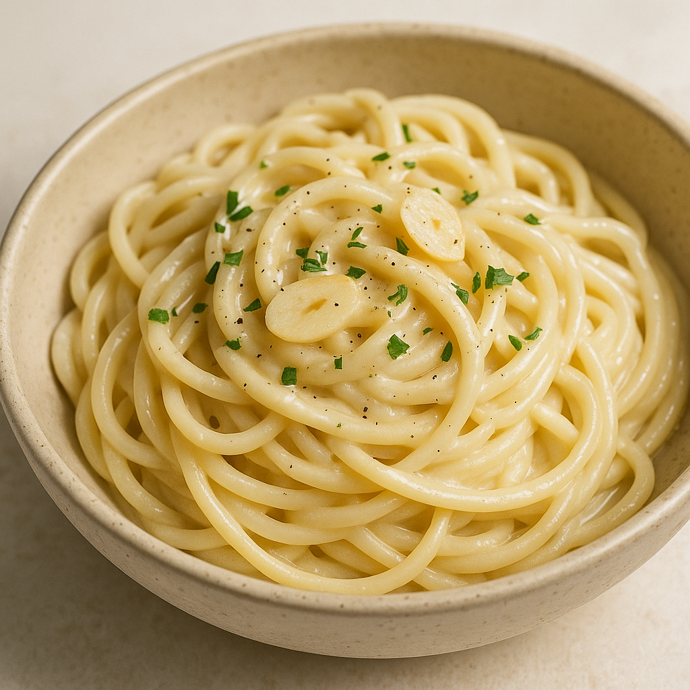

Recipe Manager
My Recipes
Login
Create Profile
Search recipes:
Browse Categories
Latest Recipes
My Recipes

Creamy Garlic Pasta
A quick and easy creamy garlic pasta perfect for weeknight dinners.
30 mins • Dinner